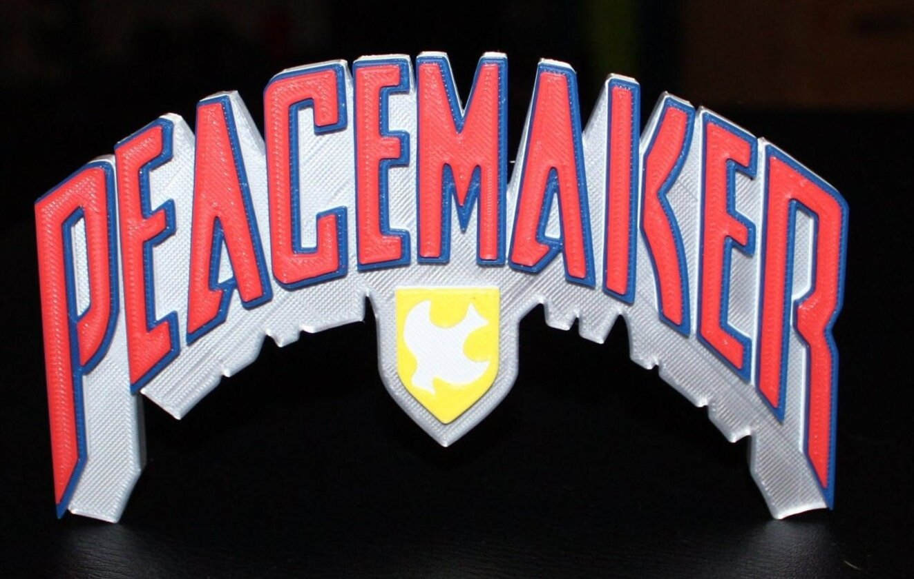
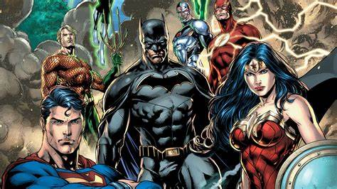

Introduction
I'm Joyy
As a dedicated DC fan, Joyy draws motivation and inspiration from the captivating stories and complex characters within the DC universe. With Peacemaker as his favorite hero, Joyy resonates deeply with the character's determination and resilience. Her love for DC films and series continually fuels her creativity and perspective on life's challenges.
Beyond his passion for DC, Joyy is an avid rock music enthusiast. She loves the electrifying energy of rock songs and finds immense joy in listening to her favorite track, "Cold Blood" by Kissin' Dynamite. The powerful melodies and lyrics of rock music inspire Joyy to approach each day with renewed vigor and enthusiasm.
In addition to her passions for DC and rock music, Joyy has a profound love for art, particularly the black and gray pencil style. This monochromatic approach allows for a remarkable depth of shading and contrast, bringing to life intricate details and capturing the essence of his subjects. Joyy finds solace and expression in creating and appreciating this art form, where every stroke of the pencil contributes to a rich tapestry of light and shadow.
Joyy's Daily Vibe
The Best Part Ever
 My Man Peacemaker Said "There's No Wrong Time For Rock" And I fxcking agree with him. Rock is the best genre of music ever. It's the only genre that can make you feel like you're on top of the world!
Joyy Instagram Joyy Facebook